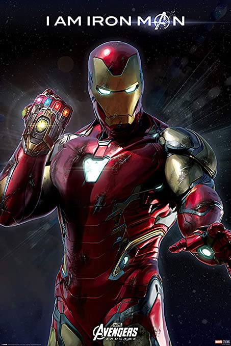
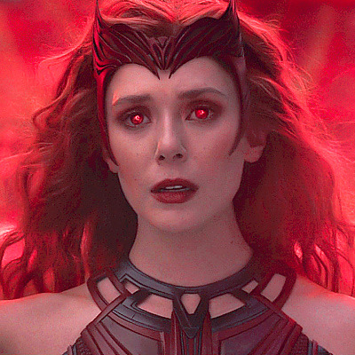
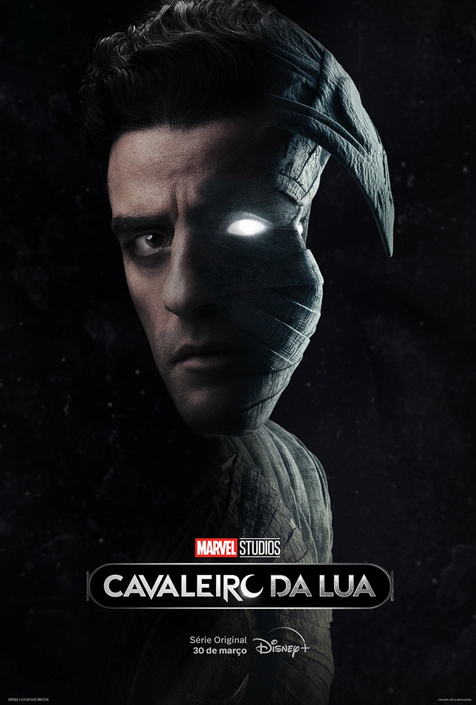

O Homem-Aranha, o alter ego de Peter Parker, é um super-herói que aparece nas revistas em quadrinhos publicadas pela Marvel Comics. Criado pelo escritor/editor Stan Lee e pelo escritor/artista Steve Ditko, o Homem-Aranha apareceu pela primeira vez na Amazing Fantasy #15, durante a Era de Prata dos Quadrinhos.
O Homem de Ferro foi um personagem dos quadrinhos publicados pela Marvel Comics. Sua verdadeira identidade é o empresário e bilionário Tony Stark, que usou armaduras de alta tecnologia no combate ao crime. Foi criado em 1963 pelo escritor Stan Lee, o roteirista Larry Lieber e os desenhistas Jack Kirby e Don Heck.
Feiticeira Escarlate é uma super-heroína que aparece nos quadrinhos americanos publicados pela Marvel Comics. A personagem foi criada pelo roteirista Stan Lee e pelo desenhista Jack Kirby. Sua primeira aparição foi em "X-Men" # 4 na Era de prata das histórias em quadrinhos americanas.
O Cavaleiro da Lua é um personagem ficcional das histórias em quadrinhos ou Banda desenhada do Universo Marvel, publicadas pela Marvel Comics. Seu nome verdadeiro é Marc Spector, embora ele se disfarce de outras pessoas para melhor investigar os casos que lhe interessam.